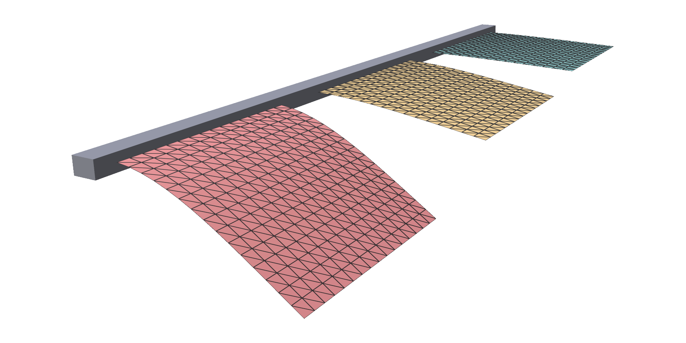
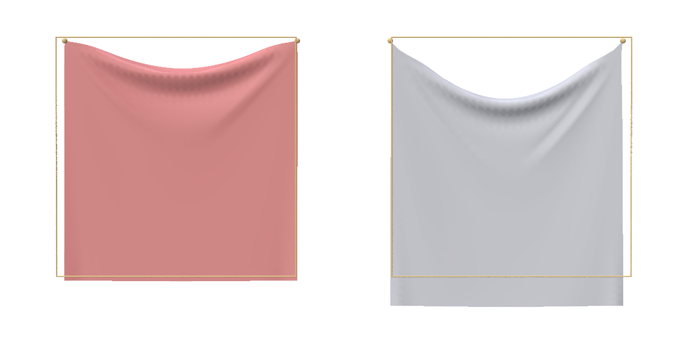
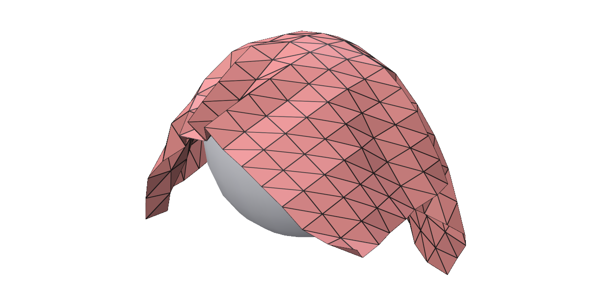

Shells¶
trusty.shells simulates thin sheets such as cloth, paper and sheet metal. A
shell is a triangle mesh of the sheet's midsurface; its thickness is a number,
not a layer of elements.
Capability: shells.
Quick example¶
A square curtain hanging from its two top corners:
world = trusty.World(backend=backend, timestep=1.0 / 60.0,
newton=trusty.NewtonConfig(max_iters=100))
config = trusty.shells.ShellConfig()
config.youngs_modulus = 1.0e4 # Pa: soft, like cloth
config.poisson_ratio = 0.3
config.thickness = 5.0e-4 # m
config.density = 500.0 # kg/m^3
config.strain_limit = strain_limit
config.strain_limit_ratio = 1.1 # stretch at most 10%
config.bending_model = BENDING[bending] # Bac by default
config.membrane_model = MEMBRANE[membrane] # Koiter by default
# V (n, 3) and F (m, 3): the sheet's vertices and triangles.
body = trusty.shells.add_shell(world, V, F, config)
trusty.shells.pin_vertices(world, body, held_corners(RES)) # top corners
Each world.step() advances one timestep, and
trusty.shells.read_positions(world, body) returns the deformed vertices as
an (n, 3) NumPy array.
add_shell adds the sheet and returns its id, which every other
trusty.shells function takes. The yellow points are the two pinned corners.
| Argument | Meaning |
|---|---|
V |
vertex positions, (n, 3), in metres. This is the rest shape. |
F |
triangles, (m, 3), indices into V |
config |
a ShellConfig: material, thickness and models; see Material and thickness |
A world simulates one shell body. If you add a second, only the last one added moves, so give each sheet a world of its own.
Full script: python examples/shells/cloth_drape.py
"""A square cloth curtain hanging from its two top corners.
A flat square sheet starts upright, leaning slightly, and is pinned at its two
top corners; gravity drapes it into a curtain with a swag between the corners.
The cloth is soft (E = 10 kPa) but cannot stretch more than 10%: the strain
limit keeps it cloth-like instead of rubbery. ``--no-strain-limit`` shows the
difference, ``--bending qb`` and ``--membrane neohookean`` swap the bending and
membrane models. ``--no-viewer`` prints the drape's size and its largest
stretch.
Usage:
python examples/shells/cloth_drape.py
python examples/shells/cloth_drape.py --no-strain-limit
python examples/shells/cloth_drape.py --bending qb
python examples/shells/cloth_drape.py --backend accelerate
python examples/shells/cloth_drape.py --no-viewer --steps 120
"""
from __future__ import annotations
import argparse
import sys
from pathlib import Path
import numpy as np
import trusty
sys.path.insert(0, str(Path(__file__).resolve().parent.parent))
from utils import init_polyscope # noqa: E402
SIDE = 1.0 # m, side length of the sheet
RES = 32 # quads per side
TOP_Z = 1.5 # height of the pinned top edge (curtain hangs below)
TILT_DEG = -1.0 # initial lean off the vertical plane
def make_square_sheet(side: float, res: int, top_z: float, tilt_deg: float = 0.0):
"""A square sheet, upright in the y-z plane (x = 0), with its top edge at
`top_z`. Each grid square is split into four triangles around a centre
vertex, so the mesh has no diagonal bias and the cloth folds evenly.
`tilt_deg` leans the sheet about its top edge: a perfectly upright sheet
is balanced and would never start to drape."""
ys = np.linspace(0.0, side, res + 1) # width (y)
zs = np.linspace(top_z - side, top_z, res + 1) # height (z), top at top_z
Y, Z = np.meshgrid(ys, zs, indexing="xy")
corners = np.stack([np.zeros(Y.size), Y.ravel(), Z.ravel()], axis=1)
def vid(i, j):
return j * (res + 1) + i
# One centre vertex per quad, at the quad midpoint; appended after corners.
yc = 0.5 * (ys[:-1] + ys[1:])
zc = 0.5 * (zs[:-1] + zs[1:])
Yc, Zc = np.meshgrid(yc, zc, indexing="xy")
centers = np.stack([np.zeros(Yc.size), Yc.ravel(), Zc.ravel()], axis=1)
base = corners.shape[0]
def cid(i, j):
return base + j * res + i
V = np.concatenate([corners, centers], axis=0).astype(np.float64)
# Lean about the horizontal top-edge axis (y at z = top_z). The pinned top
# corners lie on this axis, so they stay at x = 0, z = top_z.
if tilt_deg:
t = np.radians(tilt_deg)
x0 = V[:, 0].copy()
z0 = V[:, 2] - top_z
V[:, 0] = x0 * np.cos(t) + z0 * np.sin(t)
V[:, 2] = -x0 * np.sin(t) + z0 * np.cos(t) + top_z
tris = []
for j in range(res):
for i in range(res):
a, b = vid(i, j), vid(i + 1, j)
c, d = vid(i + 1, j + 1), vid(i, j + 1)
m = cid(i, j)
tris.append((a, b, m))
tris.append((b, c, m))
tris.append((c, d, m))
tris.append((d, a, m))
F = np.asarray(tris, dtype=np.int32)
return V, F
def held_corners(res: int):
"""The two top corners of the curtain (max height). Held fixed; the sheet
hangs and drapes from them under gravity."""
return [res * (res + 1), res * (res + 1) + res] # vid(0, res), vid(res, res)
BENDING = {"bac": trusty.shells.BendingModel.Bac,
"qb": trusty.shells.BendingModel.QuadraticLagrange}
MEMBRANE = {"koiter": trusty.shells.MembraneModel.Koiter,
"neohookean": trusty.shells.MembraneModel.NeoHookean}
def build_world(backend: str = "auto", bending: str = "bac",
membrane: str = "koiter", strain_limit: bool = True):
trusty.check_capabilities("shells")
V, F = make_square_sheet(SIDE, RES, TOP_Z, TILT_DEG)
world = trusty.World(backend=backend, timestep=1.0 / 60.0,
newton=trusty.NewtonConfig(max_iters=100))
config = trusty.shells.ShellConfig()
config.youngs_modulus = 1.0e4 # Pa: soft, like cloth
config.poisson_ratio = 0.3
config.thickness = 5.0e-4 # m
config.density = 500.0 # kg/m^3
config.strain_limit = strain_limit
config.strain_limit_ratio = 1.1 # stretch at most 10%
config.bending_model = BENDING[bending] # Bac by default
config.membrane_model = MEMBRANE[membrane] # Koiter by default
# V (n, 3) and F (m, 3): the sheet's vertices and triangles.
body = trusty.shells.add_shell(world, V, F, config)
trusty.shells.pin_vertices(world, body, held_corners(RES)) # top corners
return world, body, V, F
def max_stretch(world, body, V, F) -> float:
"""The largest edge length now, over its rest length."""
edges = np.concatenate([F[:, [0, 1]], F[:, [1, 2]], F[:, [2, 0]]])
x = trusty.shells.read_positions(world, body)
rest = np.linalg.norm(V[edges[:, 0]] - V[edges[:, 1]], axis=1)
now = np.linalg.norm(x[edges[:, 0]] - x[edges[:, 1]], axis=1)
return float((now / rest).max())
def _register_visuals(ps, world, body):
V = np.asarray(trusty.shells.read_positions(world, body))
F = np.asarray(trusty.shells.read_triangles(world, body))
ps_mesh = ps.register_surface_mesh("cloth", V, F, smooth_shade=False)
ps_mesh.set_edge_width(1.0)
return ps_mesh
def run_polyscope(world, body, steps: int):
ps = init_polyscope(headless=False)
ps_mesh = _register_visuals(ps, world, body)
state = {"i": 0, "playing": False}
def advance_one():
if state["i"] < steps:
world.step()
state["i"] += 1
ps_mesh.update_vertex_positions(
np.asarray(trusty.shells.read_positions(world, body)))
def callback():
import polyscope.imgui as psim
_, state["playing"] = psim.Checkbox("play", state["playing"])
psim.SameLine()
if psim.Button("step"):
advance_one()
elif state["playing"]:
advance_one()
psim.Text(f"step {state['i']} / {steps}")
report = world.last_report()
psim.Text(
f"last solve: iters={report.iterations} "
f"residual={report.final_residual:.3e} "
f"{'converged' if report.converged else 'DIVERGED'}"
)
ps.set_user_callback(callback)
ps.show()
def main():
parser = argparse.ArgumentParser(description=__doc__.split("\n")[0])
parser.add_argument("--backend",
choices=["auto", "cpu", "cuda", "accelerate"], default="auto")
parser.add_argument("--bending", choices=list(BENDING), default="bac",
help="bending model: bac (default) or qb, which "
"assumes a flat rest shape")
parser.add_argument("--membrane", choices=list(MEMBRANE), default="koiter",
help="membrane model (default koiter)")
parser.add_argument("--no-strain-limit", action="store_true",
help="let the cloth stretch freely")
parser.add_argument("--steps", type=int, default=120)
parser.add_argument("--no-viewer", action="store_true",
help="headless: print the drape")
args = parser.parse_args()
world, body, V, F = build_world(backend=args.backend, bending=args.bending,
membrane=args.membrane,
strain_limit=not args.no_strain_limit)
if args.no_viewer:
unconverged = 0
for _ in range(args.steps):
world.step()
unconverged += not world.last_report().converged
x = trusty.shells.read_positions(world, body)
print(f"after {args.steps} steps: bottom at z = {x[:, 2].min():.3f} m "
f"(rest {TOP_Z - SIDE:.3f} m), largest stretch "
f"{max_stretch(world, body, V, F):.3f}, "
f"{unconverged} step(s) not converged")
return
run_polyscope(world, body, args.steps)
if __name__ == "__main__":
main()
Material and thickness¶
A ShellConfig holds everything about the sheet except its shape:
config = trusty.shells.ShellConfig()
config.youngs_modulus = YOUNGS # Pa
config.poisson_ratio = POISSON
config.thickness = thickness # m
config.density = DENSITY # kg/m^3
plate = trusty.shells.add_shell(world, V, F, config)
| Field | Default | Meaning |
|---|---|---|
youngs_modulus |
1e5 |
Young's modulus, Pa |
poisson_ratio |
0.3 |
Poisson's ratio |
thickness |
1e-3 |
m |
density |
1000 |
kg/m³ |
membrane_model |
Koiter |
how the sheet resists stretching; see Models |
bending_model |
Bac |
how it resists bending |
strain_limit |
False |
cap how far the sheet can stretch; see Strain limiting |
strain_limit_ratio |
1.1 |
the largest stretch allowed, as a ratio of rest length |
project_pd |
True |
keep the solver's stiffness matrix positive definite, for robust convergence. Leave it on. |
Thickness sets how a sheet balances stretching against bending. A sheet's weight grows with its thickness, but its bending stiffness grows with the cube of it, so each doubling of thickness cuts the sag by about four. Stretching stiffness grows only in proportion, which is why a thin sheet bends easily but hardly stretches. Below, three 1 m plates of the same material, clamped along one edge, are 5, 10 and 20 mm thick:

They sag 0.42, 0.12 and 0.03 m. --no-viewer prints each sag next to the
estimate from plate theory, which it matches to within about 20% on this
coarse mesh.
Full script: python examples/shells/shell_cantilever.py
"""Three plates clamped along one edge, sagging under gravity.
The plates share one material and differ only in thickness: 5, 10 and 20 mm.
A plate's weight grows with its thickness, but its bending stiffness grows with
the cube of it, so each doubling of thickness cuts the sag by about four. The
clamp holds the first two rows of vertices; one row alone would be a hinge.
Each step solves for static equilibrium, so one step gives the final, settled
shape.
``--no-viewer`` prints each plate's sag next to the small-sag plate-theory
estimate.
Usage:
python examples/shells/shell_cantilever.py # live polyscope
python examples/shells/shell_cantilever.py --no-viewer # print the sags
python examples/shells/shell_cantilever.py --backend cuda
"""
from __future__ import annotations
import argparse
import sys
from pathlib import Path
import numpy as np
import trusty
sys.path.insert(0, str(Path(__file__).resolve().parent.parent))
from utils import init_polyscope # noqa: E402
SIDE = 1.0 # m, side length of each plate
RES = 16 # quads per side
THICKNESSES = (0.005, 0.01, 0.02) # m
SPACING = 1.3 # m, between plates along y
YOUNGS, POISSON, DENSITY = 1.0e9, 0.3, 1000.0
COLORS = [(0.937, 0.325, 0.314), (0.98, 0.70, 0.30), (0.35, 0.75, 0.70)]
def make_square_sheet(side: float, res: int, y0: float = 0.0):
"""A flat square in the x-y plane (z = 0), two triangles per grid quad."""
xs = np.linspace(0.0, side, res + 1)
ys = np.linspace(0.0, side, res + 1) + y0
X, Y = np.meshgrid(xs, ys, indexing="xy")
V = np.stack([X.ravel(), Y.ravel(), np.zeros(X.size)], axis=1)
def vid(i, j):
return j * (res + 1) + i
tris = []
for j in range(res):
for i in range(res):
tris.append((vid(i, j), vid(i + 1, j), vid(i + 1, j + 1)))
tris.append((vid(i, j), vid(i + 1, j + 1), vid(i, j + 1)))
return V, np.asarray(tris, dtype=np.int32)
def build_plate(thickness: float, y0: float = 0.0, backend: str = "auto"):
"""One plate, clamped along x = 0, in a world of its own."""
trusty.check_capabilities("shells")
world = trusty.World(backend=backend,
time_stepping="static", # each step solves equilibrium
newton=trusty.NewtonConfig(max_iters=100))
V, F = make_square_sheet(SIDE, RES, y0)
config = trusty.shells.ShellConfig()
config.youngs_modulus = YOUNGS # Pa
config.poisson_ratio = POISSON
config.thickness = thickness # m
config.density = DENSITY # kg/m^3
plate = trusty.shells.add_shell(world, V, F, config)
# Clamp the x = 0 edge: hold the first two rows of vertices. Holding
# one row only would make a hinge, and the plate would swing down.
h = SIDE / RES
clamped = np.flatnonzero(V[:, 0] < 1.5 * h)
trusty.shells.pin_vertices(world, plate, clamped.tolist())
return world, plate, V
def build_worlds(backend: str = "auto"):
"""One world per plate: a world simulates a single shell body."""
return {t: build_plate(t, k * SPACING, backend)
for k, t in enumerate(THICKNESSES)}
def tip_sag(world, plate, V) -> float:
"""How far the free edge (x = SIDE at rest) has dropped, on average."""
x = trusty.shells.read_positions(world, plate) # (num_verts, 3)
free_edge = V[:, 0] == SIDE # rows match V
sag = -x[free_edge, 2].mean()
return float(sag)
def plate_theory_sag(thickness: float) -> float:
"""Small-sag estimate for a square cantilever plate under its own weight,
at the middle of the free edge: 0.127 q L^4 / D, with q the weight per
area and D the bending stiffness. L is the free span beyond the clamp."""
q = DENSITY * thickness * 9.81
D = YOUNGS * thickness**3 / (12.0 * (1.0 - POISSON**2))
span = SIDE - SIDE / RES
return 0.127 * q * span**4 / D
def run_viewer(plates, steps: int):
ps = init_polyscope(headless=False)
meshes = {}
for k, (t, (world, plate, _)) in enumerate(plates.items()):
m = ps.register_surface_mesh(
f"{t * 1e3:g} mm", trusty.shells.read_positions(world, plate),
trusty.shells.read_triangles(world, plate), color=COLORS[k])
m.set_edge_width(1.0)
meshes[t] = m
ps.reset_camera_to_home_view()
state = {"i": 0, "playing": False}
def callback():
import polyscope.imgui as psim
_, state["playing"] = psim.Checkbox("play", state["playing"])
psim.SameLine()
if (psim.Button("step") or state["playing"]) and state["i"] < steps:
state["i"] += 1
for t, (world, plate, _) in plates.items():
world.step()
meshes[t].update_vertex_positions(
trusty.shells.read_positions(world, plate))
psim.Text(f"step {state['i']} / {steps}")
for t, (world, plate, V) in plates.items():
psim.Text(f"{t * 1e3:4.0f} mm: sag {tip_sag(world, plate, V):.3f} m")
ps.set_user_callback(callback)
ps.show()
def main():
parser = argparse.ArgumentParser(description=__doc__.split("\n")[0])
parser.add_argument("--backend",
choices=["auto", "cpu", "cuda", "accelerate"], default="auto")
parser.add_argument("--steps", type=int, default=1)
parser.add_argument("--no-viewer", action="store_true",
help="headless: print the sags")
args = parser.parse_args()
plates = build_worlds(backend=args.backend)
if args.no_viewer:
for t, (world, plate, V) in plates.items():
for _ in range(args.steps):
world.step()
report = world.last_report()
print(f"{t * 1e3:4.0f} mm: sag {tip_sag(world, plate, V):.3f} m "
f"(small-sag plate theory {plate_theory_sag(t):.3f} m) "
f"{'converged' if report.converged else 'NOT converged'}")
return
run_viewer(plates, args.steps)
if __name__ == "__main__":
main()
Membrane and bending models¶
Two choices set the physics: the membrane model (stretching and shearing in the sheet's plane) and the bending model.
BENDING = {"bac": trusty.shells.BendingModel.Bac,
"qb": trusty.shells.BendingModel.QuadraticLagrange}
MEMBRANE = {"koiter": trusty.shells.MembraneModel.Koiter,
"neohookean": trusty.shells.MembraneModel.NeoHookean}
MembraneModel |
Behaviour |
|---|---|
Koiter (default) |
St. Venant–Kirchhoff: a good default for sheets that stretch little. |
NeoHookean |
an incompressible Neo-Hookean sheet: for rubbery sheets that stretch far. |
BendingModel |
Behaviour |
|---|---|
Bac (default) |
accurate bending for any rest shape, flat or curved. |
QuadraticLagrange |
cheaper, for flat rest shapes only; add_shell warns when the mesh is not flat. It resists bending less than Bac near free edges, so use Bac when the amount of bending matters, as in the plates above. |
Set them on the config, before add_shell:
config.strain_limit = strain_limit
config.strain_limit_ratio = 1.1 # stretch at most 10%
config.bending_model = BENDING[bending] # Bac by default
config.membrane_model = MEMBRANE[membrane] # Koiter by default
python examples/shells/cloth_drape.py --bending qb --membrane neohookean
runs the curtain with the other two models.
Strain limiting¶
Cloth bends easily but barely stretches. A low Young's modulus gives the easy
bending, but on its own it also lets the sheet stretch like rubber. With
strain_limit on, no triangle can stretch past strain_limit_ratio of its
rest size, however soft the material. Below, the same soft curtain with the
limit (left) and without (right); the yellow squares are the sheets' rest
outlines. The limited sheet stretches at most 8%, and the free one up to 88%
near the corners:

python examples/shells/cloth_drape.py --no-strain-limit runs the right-hand
one.
Pinning¶
| Function | Pins |
|---|---|
pin_vertices(world, body, indices) |
the listed vertices |
pin_face(world, body, axis, coord, tol=1e-6) |
every vertex whose rest coordinate along axis (0, 1, 2 for x, y, z) is within tol of coord |
Pinned vertices stay exactly where they start. Two things to know:
- One row of pinned vertices is a hinge, not a clamp. The sheet can still
rotate about the row. To clamp an edge, pin two rows.
pin_faceselects one plane of vertices, so on a flat sheet it makes a hinge. - Each call replaces the previous pins. Pass every pinned vertex in one call.
The plates above are clamped like this:
# Clamp the x = 0 edge: hold the first two rows of vertices. Holding
# one row only would make a hinge, and the plate would swing down.
h = SIDE / RES
clamped = np.flatnonzero(V[:, 0] < 1.5 * h)
trusty.shells.pin_vertices(world, plate, clamped.tolist())
Soft pins with moving targets work on shells too; see Boundary conditions. Their stiffness is per unit volume, and a sheet has very little volume, so a shell needs a far stiffer pin than a solid does. Surface loads are not available for shells.
Initial positions¶
The V given to add_shell is the rest shape: the shape the sheet has no
energy in. To start the simulation from a different shape, set the initial
positions before the first step:
V, F = make_strip(LENGTH, WIDTH, RES) # the rest shape: flat
body = trusty.shells.add_shell(world, V, F, config)
# Start rolled into a half cylinder; the rest shape stays flat.
trusty.shells.set_initial_positions(world, body, rolled(V, LENGTH))
Here a flat strip starts rolled into a half cylinder. With no gravity, it springs open, is flat again half a second later, and swings back and forth about flat:
set_initial_positions(world, body, X) takes one row per vertex of V, and
only has an effect before the first step. For a sheet that is curved at rest,
pass the curved shape as V instead.
Full script: python examples/shells/spring_back.py
"""A flat plate, started rolled up, springs back flat.
The mesh passed to ``add_shell`` is the rest shape: here a flat strip. Before
the first step, ``set_initial_positions`` bends it into a half cylinder, so the
simulation starts from that curved state while the rest shape stays flat.
Released without gravity, the plate unrolls and swings back and forth about
flat. ``--no-viewer`` prints how far the plate is from flat as it goes.
Usage:
python examples/shells/spring_back.py # live polyscope
python examples/shells/spring_back.py --no-viewer # print the unrolling
python examples/shells/spring_back.py --steps 240
"""
from __future__ import annotations
import argparse
import sys
from pathlib import Path
import numpy as np
import trusty
sys.path.insert(0, str(Path(__file__).resolve().parent.parent))
from utils import init_polyscope # noqa: E402
LENGTH, WIDTH = 0.6, 0.2 # m
RES = (24, 8) # quads along length and width
def make_strip(length: float, width: float, res):
"""A flat strip in the x-y plane (z = 0), two triangles per grid quad."""
nx, ny = res
X, Y = np.meshgrid(np.linspace(0.0, length, nx + 1),
np.linspace(0.0, width, ny + 1), indexing="xy")
V = np.stack([X.ravel(), Y.ravel(), np.zeros(X.size)], axis=1)
def vid(i, j):
return j * (nx + 1) + i
tris = []
for j in range(ny):
for i in range(nx):
tris.append((vid(i, j), vid(i + 1, j), vid(i + 1, j + 1)))
tris.append((vid(i, j), vid(i + 1, j + 1), vid(i, j + 1)))
return V, np.asarray(tris, dtype=np.int32)
def rolled(V: np.ndarray, length: float) -> np.ndarray:
"""The flat strip bent, without stretching, into a half cylinder about
an axis along y, with the strip's middle at the bottom."""
radius = length / np.pi
theta = (V[:, 0] - length / 2) / radius # arc length -> angle
X = V.copy()
X[:, 0] = length / 2 + radius * np.sin(theta)
X[:, 2] = radius * (1.0 - np.cos(theta))
return X
def build_world(backend: str = "auto"):
trusty.check_capabilities("shells")
world = trusty.World(backend=backend, timestep=1.0 / 60.0,
gravity=(0.0, 0.0, 0.0))
config = trusty.shells.ShellConfig()
config.youngs_modulus = 1.0e7
config.poisson_ratio = 0.3
config.thickness = 2.0e-3
config.density = 1000.0
V, F = make_strip(LENGTH, WIDTH, RES) # the rest shape: flat
body = trusty.shells.add_shell(world, V, F, config)
# Start rolled into a half cylinder; the rest shape stays flat.
trusty.shells.set_initial_positions(world, body, rolled(V, LENGTH))
return world, body, V
def height(world, body) -> float:
"""How far the plate is from flat: its extent along z."""
z = trusty.shells.read_positions(world, body)[:, 2]
return float(z.max() - z.min())
def run_viewer(world, body, steps: int):
ps = init_polyscope(headless=False)
m = ps.register_surface_mesh("plate", trusty.shells.read_positions(world, body),
trusty.shells.read_triangles(world, body))
m.set_edge_width(1.0)
ps.reset_camera_to_home_view()
state = {"i": 0, "playing": False}
def callback():
import polyscope.imgui as psim
_, state["playing"] = psim.Checkbox("play", state["playing"])
psim.SameLine()
if (psim.Button("step") or state["playing"]) and state["i"] < steps:
world.step()
state["i"] += 1
m.update_vertex_positions(trusty.shells.read_positions(world, body))
psim.Text(f"step {state['i']} / {steps} height {height(world, body):.3f} m")
ps.set_user_callback(callback)
ps.show()
def main():
parser = argparse.ArgumentParser(description=__doc__.split("\n")[0])
parser.add_argument("--backend",
choices=["auto", "cpu", "cuda", "accelerate"], default="auto")
parser.add_argument("--steps", type=int, default=120)
parser.add_argument("--no-viewer", action="store_true",
help="headless: print the plate's height")
args = parser.parse_args()
world, body, _ = build_world(backend=args.backend)
if args.no_viewer:
print(f"step 0: height {height(world, body):.3f} m")
for i in range(1, args.steps + 1):
world.step()
if i % 10 == 0:
report = world.last_report()
print(f"step {i:3d}: height {height(world, body):.3f} m"
f"{'' if report.converged else ' (NOT converged)'}")
return
run_viewer(world, body, args.steps)
if __name__ == "__main__":
main()
Reading results¶
| Function | Returns |
|---|---|
read_positions(world, body) |
current vertex positions, (n, 3), rows matching V |
read_triangles(world, body) |
the triangles, (m, 3), the same as F |
The rows match V, so a vertex selected on the rest mesh can be read
directly. The plates' sag, measured along their free edge:
x = trusty.shells.read_positions(world, plate) # (num_verts, 3)
free_edge = V[:, 0] == SIDE # rows match V
sag = -x[free_edge, 2].mean()
Contact¶
With contact on, shells collide with walls and with other bodies. Here a sheet drops onto a fixed sphere and drapes over it:
trusty.contact.enable(world, trusty.contact.Config(kappa=1.0e4))
sh_cfg = trusty.shells.ShellConfig()
sh_cfg.youngs_modulus = 1.0e5
sh_cfg.poisson_ratio = 0.3
sh_cfg.thickness = 1.0e-3
sh_cfg.density = 1.0e3
body = trusty.shells.add_shell(world, V_sh, F_sh, sh_cfg)
V_sp, F_sp = make_uv_sphere(SPHERE_CENTER, SPHERE_RADIUS)
trusty.contact.add_wall(world, "sphere", V_sp, F_sp)

Contact settings and walls are covered under Contact.
python examples/shells/shell_hex_coupled.py drops a sheet onto a soft
solid beam in the same world.
Full script: python examples/shells/shell_drop.py
"""A square sheet dropped onto a fixed sphere, with contact.
A flat sheet falls under gravity and lands on a sphere, a fixed contact wall,
then drapes over it. ``--no-viewer`` prints where the sheet rests and how
far its corners hang.
Usage:
python examples/shells/shell_drop.py
python examples/shells/shell_drop.py --backend accelerate
python examples/shells/shell_drop.py --no-viewer --steps 240
"""
from __future__ import annotations
import argparse
import sys
from pathlib import Path
import numpy as np
import trusty
sys.path.insert(0, str(Path(__file__).resolve().parent.parent))
from utils import init_polyscope # noqa: E402
SIDE = 1.0
RES = 16
DROP_Z = 0.6
SPHERE_CENTER = (0.5, 0.5, 0.0)
SPHERE_RADIUS = 0.25
def make_square_sheet(side: float, res: int, z0: float):
xs = np.linspace(0.0, side, res + 1)
ys = np.linspace(0.0, side, res + 1)
X, Y = np.meshgrid(xs, ys, indexing="xy")
Z = np.full_like(X, z0)
V = np.stack([X.ravel(), Y.ravel(), Z.ravel()], axis=1).astype(np.float64)
def vid(i, j):
return j * (res + 1) + i
tris = []
for j in range(res):
for i in range(res):
tris.append((vid(i, j), vid(i + 1, j), vid(i + 1, j + 1)))
tris.append((vid(i, j), vid(i + 1, j + 1), vid(i, j + 1)))
return V, np.asarray(tris, dtype=np.int32)
def make_uv_sphere(center, radius: float, n_lat: int = 12, n_lon: int = 24):
"""Closed UV sphere triangle mesh. Outward winding."""
cx, cy, cz = center
verts = [(cx, cy, cz + radius)] # north
for j in range(1, n_lat):
theta = np.pi * j / n_lat
sin_t, cos_t = np.sin(theta), np.cos(theta)
for i in range(n_lon):
phi = 2.0 * np.pi * i / n_lon
verts.append((cx + radius * sin_t * np.cos(phi),
cy + radius * sin_t * np.sin(phi),
cz + radius * cos_t))
verts.append((cx, cy, cz - radius)) # south
V = np.asarray(verts, dtype=np.float64)
south = len(V) - 1
tris = []
# North cap.
for i in range(n_lon):
a = 1 + i
b = 1 + (i + 1) % n_lon
tris.append((0, a, b))
# Middle rings.
for j in range(n_lat - 2):
base0 = 1 + j * n_lon
base1 = 1 + (j + 1) * n_lon
for i in range(n_lon):
a = base0 + i
b = base0 + (i + 1) % n_lon
c = base1 + (i + 1) % n_lon
d = base1 + i
tris.append((a, b, c))
tris.append((a, c, d))
# South cap.
base = 1 + (n_lat - 2) * n_lon
for i in range(n_lon):
a = base + i
b = base + (i + 1) % n_lon
tris.append((a, south, b))
return V, np.asarray(tris, dtype=np.int32)
def build_world(backend: str = "auto"):
trusty.check_capabilities("shells", "contact")
V_sh, F_sh = make_square_sheet(SIDE, RES, DROP_Z)
world = trusty.World(backend=backend,
timestep=1.0 / 120.0,
newton=trusty.NewtonConfig(max_iters=50),
time_stepping="bdf2")
trusty.contact.enable(world, trusty.contact.Config(kappa=1.0e4))
sh_cfg = trusty.shells.ShellConfig()
sh_cfg.youngs_modulus = 1.0e5
sh_cfg.poisson_ratio = 0.3
sh_cfg.thickness = 1.0e-3
sh_cfg.density = 1.0e3
body = trusty.shells.add_shell(world, V_sh, F_sh, sh_cfg)
V_sp, F_sp = make_uv_sphere(SPHERE_CENTER, SPHERE_RADIUS)
trusty.contact.add_wall(world, "sphere", V_sp, F_sp)
return world, body, (V_sp, F_sp)
def _register_visuals(ps, world, body, sphere):
V = np.asarray(trusty.shells.read_positions(world, body))
F = np.asarray(trusty.shells.read_triangles(world, body))
ps_sheet = ps.register_surface_mesh("shell", V, F, smooth_shade=False)
ps_sheet.set_edge_width(1.0)
V_sp, F_sp = sphere
ps.register_surface_mesh("sphere", V_sp, F_sp, color=(0.6, 0.6, 0.6))
return ps_sheet
def run_polyscope(world, body, sphere, steps: int):
ps = init_polyscope(headless=False)
ps_mesh = _register_visuals(ps, world, body, sphere)
state = {"i": 0, "playing": False}
def advance_one():
if state["i"] < steps:
world.step()
state["i"] += 1
ps_mesh.update_vertex_positions(
np.asarray(trusty.shells.read_positions(world, body)))
def callback():
import polyscope.imgui as psim
_, state["playing"] = psim.Checkbox("play", state["playing"])
psim.SameLine()
if psim.Button("step"):
advance_one()
elif state["playing"]:
advance_one()
psim.Text(f"step {state['i']} / {steps}")
report = world.last_report()
psim.Text(
f"last solve: iters={report.iterations} "
f"residual={report.final_residual:.3e} "
f"{'converged' if report.converged else 'DIVERGED'}"
)
ps.set_user_callback(callback)
ps.show()
def main():
parser = argparse.ArgumentParser(description=__doc__.split("\n")[0])
parser.add_argument("--backend",
choices=["auto", "cpu", "cuda", "accelerate"], default="auto")
parser.add_argument("--steps", type=int, default=180)
parser.add_argument("--no-viewer", action="store_true",
help="headless: print where the sheet ends up")
args = parser.parse_args()
world, body, sphere = build_world(backend=args.backend)
if args.no_viewer:
unconverged = 0
for _ in range(args.steps):
world.step()
unconverged += not world.last_report().converged
x = trusty.shells.read_positions(world, body)
top = SPHERE_CENTER[2] + SPHERE_RADIUS
print(f"after {args.steps} steps: the sheet rests at z = {x[:, 2].max():.4f} m "
f"on the sphere's top at {top:.4f} m; its corners hang down to "
f"z = {x[:, 2].min():.3f} m. {unconverged} step(s) not converged")
else:
run_polyscope(world, body, sphere, args.steps)
if __name__ == "__main__":
main()
Reference¶
Every function and argument: trusty.shells reference.